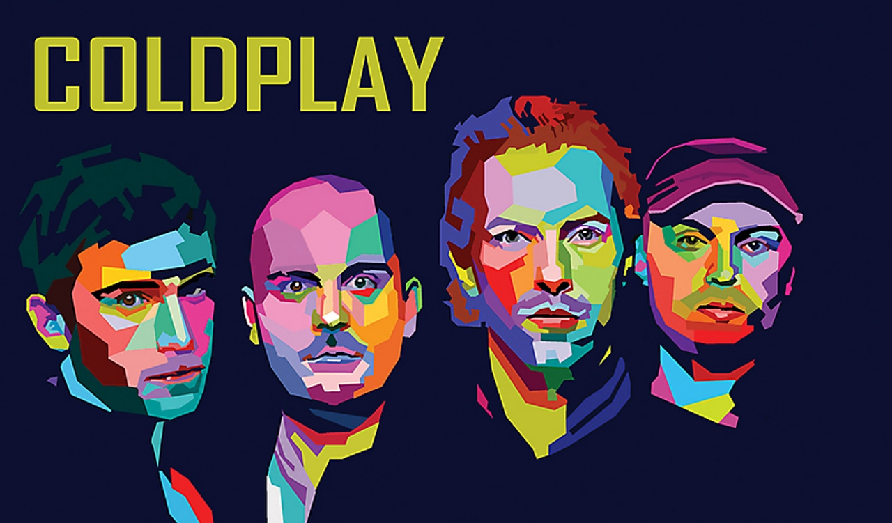
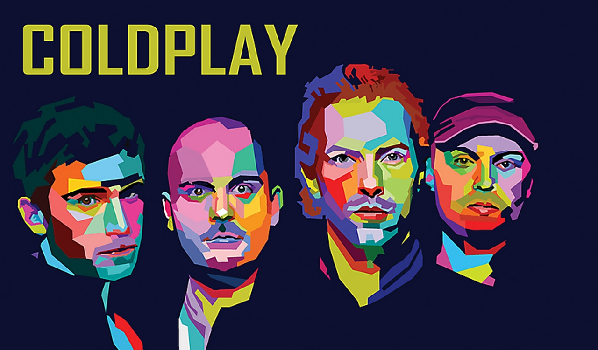
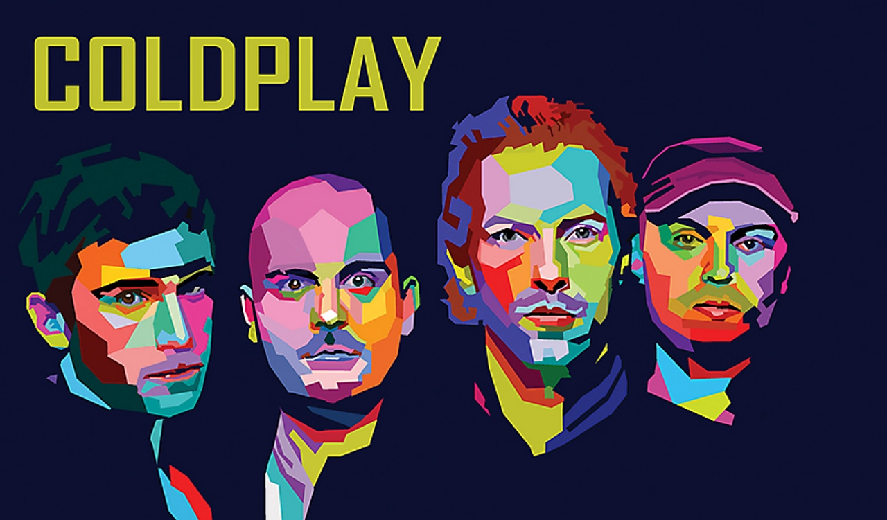

Galeria


 

Coldplay é uma banda britânica de rock alternativo formada em 1996 em Londres, Inglaterra. A banda é composta por
Chris Martin (vocalista e pianista), Jonny Buckland (guitarrista), Guy Berryman (baixista) e Will Champion (baterista).
Eles começaram com o nome Pectoralz, depois mudaram para Starfish, e finalmente se estabeleceram como Coldplay.
A banda alcançou fama internacional com o lançamento do single “Yellow” em 2000, seguido pelo seu álbum de estreia “Parachutes”.
O sucesso continuou com álbuns aclamados pela crítica como “A Rush of Blood to the Head” (2002) e “X&Y” (2005), este último
sendo o álbum mais vendido mundialmente naquele ano. Com um estilo que combina rock alternativo, post-britpop e pop rock,
Coldplay é conhecida por suas letras emotivas e performances ao vivo energéticas. Ao longo dos anos, a banda lançou vários
álbuns de sucesso, incluindo “Viva la Vida or Death and All His Friends” (2008), que rendeu três Grammy Awards, e “Mylo Xyloto” (2011),
que liderou as paradas em mais de 34 países. Coldplay também é ativa em várias causas sociais e políticas, apoiando campanhas
como a Make Trade Fair da Oxfam e a Anistia Internacional. Com mais de 100 milhões de discos vendidos, a banda se estabeleceu
como um dos maiores nomes da música contemporânea.
Chris Martin, o carismático vocalista do Coldplay, é conhecido por sua voz única e presença de palco magnética. Nascido em 1977, ele cresceu em Devon, Inglaterra, e desde cedo mostrou um grande interesse pela música. Além de ser o principal compositor da banda, Chris também toca vários instrumentos, incluindo piano e guitarra. Ele é um ativista entusiasta, envolvendo-se em várias causas sociais e ambientais. Sua abordagem à vida é marcada por um estilo de vida saudável, optando por não fumar e evitar álcool. Chris estudou na prestigiosa University College London, onde conheceu os futuros membros do Coldplay e formou a banda que mudaria sua vida para sempre.
O baixista Guy Berryman é o discreto motor rítmico do Coldplay. Nascido na Escócia em 1978, Guy inicialmente começou a estudar engenharia antes de se dedicar à música. Ele é conhecido por seu estilo de tocar baixo melódico e sua habilidade em criar linhas de baixo que complementam perfeitamente as melodias da banda. Fora da música, Guy tem uma paixão por design e fotografia, tendo até lançado sua própria revista de moda. Ele também é um ávido colecionador de carros clássicos, demonstrando seu bom gosto e apreço pela estética.
Phil Harvey, muitas vezes referido como o quinto membro do Coldplay, tem sido um elemento crucial no sucesso da banda desde o início. Ele desempenha o papel de diretor criativo, influenciando as decisões visuais e estéticas do grupo. Phil estudou na Universidade de Oxford antes de deixar seus estudos para se concentrar na gestão da banda. Sua visão e liderança foram fundamentais para o desenvolvimento da identidade única do Coldplay e para o estabelecimento de sua marca global.
Jonny Buckland, o guitarrista principal do Coldplay, é conhecido por seus riffs distintos e estilo de tocar atmosférico. Nascido no País de Gales em 1977, Jonny foi influenciado por bandas como U2 e My Bloody Valentine. Ele estudou astronomia e matemática na University College London, mas sua paixão pela música logo o levou a se concentrar na carreira com o Coldplay. Seu talento para criar texturas sonoras tem sido uma parte integral do som da banda.
Will Champion, o baterista do Coldplay, é um multi-instrumentista talentoso que contribuiu significativamente para o som diversificado da banda. Nascido em Southampton, Inglaterra, em 1978, Will não tinha experiência formal como baterista quando se juntou ao Coldplay. No entanto, sua determinação e habilidade musical natural permitiram que ele se tornasse um componente essencial do grupo. Além da bateria, Will toca piano, guitarra e canta, mostrando sua versatilidade como músico.
